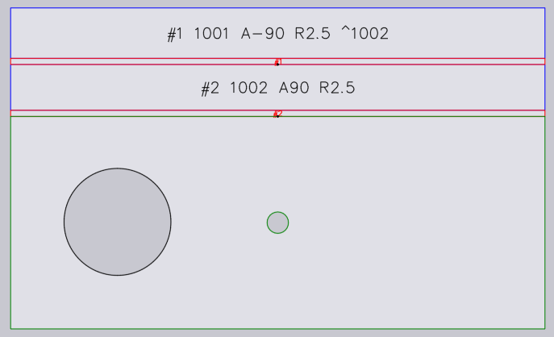
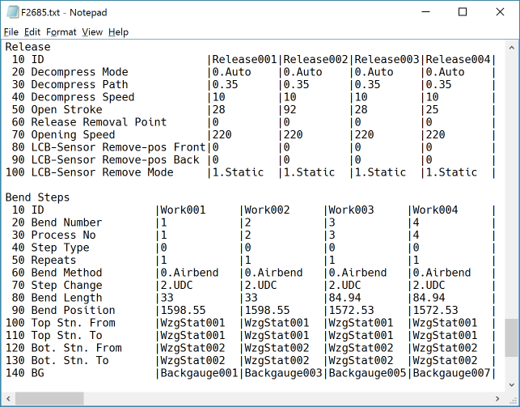
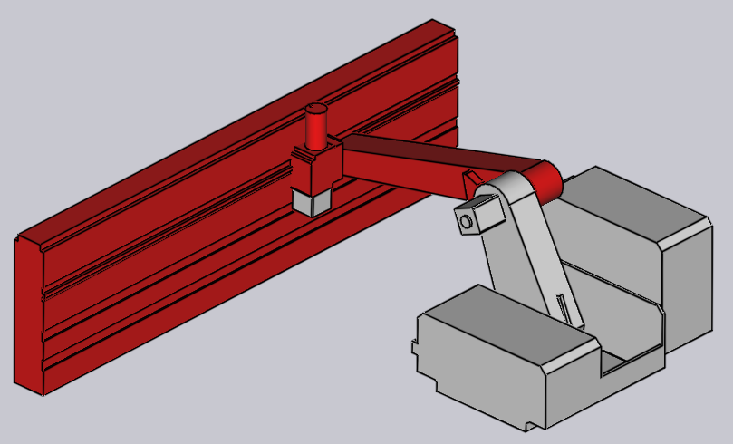

2005FluxCommandFiles
product: flux org: metamation tags: [metamation, knowledge-base, flux, notes, legacy, tech] type: note project: Flux source: Notes/Tech/2005.FluxCommandFiles.ftx updated: 2026-07-13
2005 ◉ Flux Command Files
[!info]- Revision history
Rev Date Author Note V1 2016-04-03 AV V2 2018-06-25 AV Added BendGeoSequence command V3 2018-10-26 AV Flux 288: Added NC5KCrashTest command V4 2018-11-12 AV Added FoldPartResize command V5 2018-12-25 AV Added DXFtoModel2DPath command V6 2019-04-13 AV Added GenerateMLData command V7 2019-05-05 AV Added DumpBendTech command V8 2019-11-26 SK Added LayNCCode command
This document explains how to use CMD files in Flux to perform automated processing from the command-line. These are the commands documented on this page:
| Command | Notes |
|---|---|
| [[#The BendGeoSequence command|BendGEOSequence]] | Computes a valid bending sequence from a GEO file |
| [[#BNCTranslate|BNCTranslate]] | Converts trumpf bend BNC code into a simple tabular form |
| [[#Convert3D|Convert3D]] | Convert a 3D file from one format to another |
| [[#The DXFtoModel2DPath command|DXFtoModel2DPath]] | Converts an input 2D drawing to a Model2DPath node |
| [[#The DumpBNC command|DumpBNC]] | Reformats a BNC file in easy-to-read tabular format |
| [[#The DumpBendTech command|DumpBendTech]] | Output a summary of bend-tech into a simple text file |
| [[#The FoldNCCode command|FoldNCCode]] | Loads a part and generates NC code |
| [[#The FoldModelGeometry command|FoldModelGeometry]] | Converts a panel-bender ModelGeometry node into a drawing |
| [[#The FoldPartResize command|FoldPartResize]] | Parametrically resize a panel-bender part |
| [[#The LayNCCode command|LayNCCode]] | Loads a layout (.fxlyt) and generates NC code |
| [[#The GetFoldSettings command|GetFoldSettings]] | Obtains some settings used by the panel-bender CAM engine |
| [[#The NC5KCrashTest command|NC5KCrashTest]] | Checks a BendCell-5000 BNC code for collisions |
Structure of a CMD file
A Flux command file is a text file in INI format. Every CMD file has a [Header] section that looks like this:
[Header]
Type=FluxCommandFile
Following this is a [Command] section that always has a Type entry, like this:
[Command]
Type=FoldNCCode
…
The Type entry tells Flux what kind of command to perform, and the rest of the entries in the Command section provide the various inputs required for completing this command. Various types of commands will be added in time, and the sections below describe the inputs and outputs for each type of command.
Note: When creating an INI file, it is important to note that there should be no spaces before or after the = sign on each line.
Submitting a command file for processing
A command file is submitted for processing using the command line, like this:
flux.exe c:\etc\input.cmd
Flux returns an exit code of 0 if the command file could be processed, and -1 if there was a problem (the command file is missing, or could not be understood). The complete path and filename of the CMD file should be specified.
Note 1: This works only if the BatchRun feature is turned on in the Flux license (Feature ID 5010). If the batch processing does not work (Flux just starts normally instead of running the batch mode command), check if this feature is available in the license.
Note 2: In general, this mechanism is designed to be used from another application; when such an application invokes Flux.exe and passes a CMD file as input, please make sure that you program it to wait until the Flux process exits. Only then can the results be read. (This usually means that the calling application should use some mechanism such as Process.WaitForExit or some similar function).
The FoldNCCode command
This command loads a part, does a panel-bender sequencing (Fold CAM) and generates NC code. Here is the input for a FoldNCCode command:
[Header]
Type=FluxCommandFile
|
[Command]
Type=FoldNCCode
Input=c:\etc\samples\20.01.sldprt
MachineID=110002
NCOutputDir=c:\etc\output
- The Input setting is used to specify the full filename (with path) of the input file. This should be in one of the 2D or 3D formats that Flux can import
- The MachineID setting should specify the integer ID of the machine
- The NCOutputDir setting is the directory where the output NC code is stored. This folder should already exist before the command file is invoked.
Flux opens the part, generates Fold tooling using the specified machine, and generates NC code into the specified output folder. The XML output code has the same base filename as the input file. After this process is completed, Flux shuts down.
Flux also modifies the cmd file to append some information about the status of processing. Here is how the file will look after the processing is complete:
[Command]
...
Status=0, OK
ErrorCount=0
WarningCount=0
The Status entry contains an integer status code, and an English description of the status. These are the possible status codes:
| Code | Description |
|---|---|
| 0 | OK |
| 1 | Input file not found |
| 2 | Cannot load input part |
| 3 | Machine ID incorrect |
| 4 | Fold auto-tooling failed |
| 5 | Error generating NC code |
If the status code is 4 (auto-tooling failed), more information is available by reading the Status2 value, which tells us why it failed (part could not be folded to 3D, no valid sequence found etc).
If the auto-tooling succeeded, then the ErrorCount and WarningCount settings tell us how many warnings and errors occur in the panel-bender tooling. These correspond to the yellow and red cells in the Fold Navigator. For example, (“ENW overload” is an error, and “air-gap adjusted” is a warning).
The FoldPartResize command
The FoldPartResize command takes an already-processed panel-bender part, and resizes it, potentially changing the base-length, base-width and thickness of the part. If this is successful, it generates an updated FX file and XML code for the newly resized part. The command file looks like this:
[Header]
Type=FluxCommandFile
|
[Command]
Type=FoldPartResize
Input=c:\etc\Trial.fx ; Input part (must have valid panel-bender tooling already)
LengthDelta=168 ; The length (long side) is changed by this value
WidthDelta=-42 ; The width (short side) is changed by this value
Thickness=2.8 ; The new thickness (omit this key to keep the same thickness)
Name=Trial-Output.fx ; The name for the newly created part (FX and XML files use this name)
OutputFolder=c:\etc\Outputs ; Location to save output FX and XML files
ForceFZ38=1 ; If set, Flux tries to apply an FZ38 centering to every side
After this command is complete, Flux will update the FXCMD file adding some status about the processing, like this:
...
[Command]
...
Status=0, OK
ErrorCount=0
WarningCount=0
The Status entry contains an integer status code and an English description of the status (separated by a comma). These are the possible status codes
| Code | Description |
|---|---|
| 0 | OK |
| 1 | No fold technology in input FX |
| 2 | Part does not have a rectangular base |
| 3 | Resize failed (for example, base size becomes negative) |
| 4 | Fold tech failed (the fold technology could not be recomputed) |
| 5 | Cannot change thickness - some geometry cannot be regenerated |
| 6 | Input part could not be loaded (for example panel-bender is not installed) |
| 7 | Some other internal error occured during processing (send part to Metamation) |
Notes
- If you leave out LengthDelta or WidthDelta the corresponding length/width is unchanged.
- If you leave out Thickness, the thickness is unchanged.
- If you leave out the OutputFolder, the output is generated in the same folder where the FXCMD file exists.
- In general, changes in length and width are more predictable. Changes in thickness can cause problems near corners (as flanges intrude into each other). Flux cannot correct such corner problems automatically.
- Flux tries to move the holes as the part is resized. Some holes may be deleted when the size is reduced, and some holes may change size. In general, the resulting part is not meant to be used for laser cutting, it is only meant to provide a reasonable panel-bending program.
- If there are large cutouts near the center of the part, these are usually expanded if the part is expanded. This may cause issues with the 7030 machines (since the rotor may no longer have a good area to grip). Since Flux has no way of knowing how the hole sizes should be changed when the part size changes, this cannot be avoided.
- As the part size changes, Flux will alter the tooling adding/removing ENW as needed. Also, if some of the bends use an ZBW tool the ZBW tooling lengths will be adapted if possible.
The FoldModelGeometry command
The FoldModelGeometry command can be used to generate a drawing extracted from the ModelGeometry node in a panel-bender NC code file. The input file looks like this:
[Header]
Type=FluxCommandFile
|
[Command]
Type=FoldModelGeometry
Input=c:\etc\geom-b.xml
Output=c:\etc\output.fx
This creates an output FX file that has just a drawing, that could look like this.

For each BendGeometry, the deforming parts (flexes) are outlined in red, while the planes are outlined in blue. The text annotation indicates the Id, BendId, Angle and Radius of the flex. In addition, the parent BendGeometry is indicated with a pointer like ^1002. The point entities are drawn based on the PlanarRotationAngle and the BaseCenterDistance values.
The DXFtoModel2DPath command
The DXFtoModel2DPath command can be used to generate a Model2DPath XML element that represents the given input 2D drawing. The input ifle looks like this:
[Header]
Type=FluxCommandFile
|
[Command]
Type=DXFtoModel2DPath
Input=c:\etc\input.dxf
Output=c:\etc\output.xml
This creates an output XML file that has a Drawing as the root, which in turn contains a Model2dPath node.
The BendGeoSequence command
The BendGeoSequence command can be used to compute a valid bending sequence for a GEO file. It does not generate any bending program or setups, but just outputs the sequence as a series of bend-line indices and positions. These can be correlated with the bend lines from the original GEO. The command input looks like this:
[Header]
Type=FluxCommandFile
|
[Command]
Type=BendGeoSequence
Input=c:\etc\temp\bend_part_135.geo
MachineID=120003
Output=c:\etc\temp\bend_sequence.ini
- The Input should be set to the full filename (with path) of a GEO file that is suitable for bending.
- The MachineID parameter should bt the machine ID of some machine that is already installed in the current Flux configuration.
- The Output setting should provide a filename where Flux will store the computed sequence. If this file exists, it will be overwritten.
Flux loads the GEO file, computes a bend sequence with the selected machine and generates the output INI file with the results, if there are no errors. It also updates this input command file by adding a Status line to the [Command] section. For example, the file may look like this if all the processing went off correctly:
[Header]
Type=FluxCommandFile
|
[Command]
Type=BendGeoSequence
Input=c:\etc\temp\bend_part_135.geo
MachineID=120003
Output=c:\etc\temp\bend_sequence.ini
Status=0, OK
The Status entry contains an integer status code, and an English description of the status. These are the possible status codes:
| Code | Description |
|---|---|
| 0 | OK |
| 1 | Input file not found |
| 2 | Cannot load input part |
| 3 | Machine ID incorrect |
| 4 | Output file not specified |
| 5 | Bend solution could not be computed |
If the status code is 5 (auto-tooling failed), more information is available by reading the Status2 value, which tells us why it failed (part could not be folded to 3D, no valid sequence found etc).
If the status code is 0, then an output file is generated which contains the computed sequence. That file looks like this:
[Sequence]
BendCount=8
|
[Bend1]
Angle=90
Length=300
LinesCount=1
Line1=(51.8166,8.1834),(348.1834,8.1834)
Index1=1
|
[Bend2]
Angle=90
Length=300
LinesCount=2
Line1=(50,48.0502),(350,48.0502)
Index1=5
Line2=(382,48.0502),(403.5,48.0502)
Index2=7
...
...
...
[Bend8]
Angle=90
Length=500
LinesCount=1
Line1=(48.0502,50),(48.0502,550)
Index1=6
As you can see, there is an INI file section for each bend line. For each bend, there is some basic information like the bend angle and the bending length (we can easily add more information here about the bend if you need).
Each bend is represented by one or more bend lines from the original GEO file. Often, there is only one bend-line for a particular bend. But sometimes, there are multiple lines if there are several grouped bending operations being done at once (see the Bend2 in the example above):
- The LinesCount entry for each bend tells you how many bend lines from the original GEO file are bent together in this bend (this is most often set to 1)
- The entries like Line1, Line2 etc contain the end points of these particular bend-lines as they appear in the original GEO file
- The entries like Index1, Index2 etc contain the indices of these particular bend-lines in the original GEO file. For example, we can see from this example above that the 5th and 7th bend-lines from the original GEO file were processed together as Bend 2 of this solution.
Note 1: It is possible that a particular bend-line from the GEO file will appear twice in the bends-list. This is the case where the bend is performed using two steps (for example, a pre-bend and then a fold on the same bend-line).
Note 2: In a sense, the output has some redundancy. If you know the bend line indices, you could get the bend-line end-points from the GEO file, or the other way around. Flux provides both for your convenience
The GetFoldSettings command
The GetFoldSettings command obtains some settings used by the panel-bender CAM engine. The command input looks like this:
[Header]
Type=FluxCommandFile
|
[Command]
Type=GetFoldSettings
Output=c:\etc\temp\output.ini
The Output setting should provide a filename where Flux will store the settings information. After this command finishes executing, this file will look like this:
[Settings]
NCCodeDestination=C:\Flux\Output
It is possible that the NCCodeDestionation setting may contain an environment variable like $COMMONDOCUMENTS. If this is the case, the caller will need to expand this to the actual folder (using the Environment.GetFolderPath .Net API function).
The BNCTranslate command
The BNCTranslate command converts a Trumpf bending BNC into a simpler tabular form that is much easier to read and compare:
[Command]
Type=BNCTranslate
Input=c:\etc\samples\00.01.bnc
Output=c:\etc\parsed\00.01.txt
TrimZeroes=1
The Input key points to the BNC file that should be converted, and the Output key specifies the file to which the output should be written (if this file exists already, it will be overwritten). The TrimZeroes can be set to 0 or 1 to indicate whether the trailing zeroes in the BNC file should get trimmed off (easier to read) or left in place.

The screenshot above shows a portion of the output generated by this command.
The DumpBendTech command
The DumpBendTech command outputs a bending technology in a simplified format useful for testing. In particular, this shows the bending sequence, the tooling, the gauging positions and the errors and warnings on each bend. The input is an FX file that is already tooled up with bend-technology. The Command section looks like this:
[Command]
Type=DumpBendTech
Input=c:\etc\sample\sample.fx
Output=c:\etc\sample\output.txt
And the output file looks like this:
[Info]
Matl=1.0038 Thick=2.5 MC=13:"5130X 6A B23"
[Seq]
8, 6, 4, 2
[Setup 1]
'OW200/S R1/86 H220' [300+10+300] X=0
'EV024 W16/86 R1.6' [500+35+25+50] X=0
[Bend 1]
Open=40
G1 (-277.3,195,-8)
G2 (298,20,-8) Surf=1
Status=BGSingle
[Bend 2]
Open=65
G1 (-289,22.3,-8) Surf=1
G2 (289,22.3,-8) Surf=1
Status=RotateFlip
[Bend 3]
XMap=37.4 Open=115
G1 (-289,102.3,-10.6) Surf=0 Retract=23
G2 (289,102.3,-10.6) Surf=0 Retract=23
Status=ToolSpan, RotateFlip
[Bend 4]
Angle=152.5 Open=195
G1 (-289,104,-10.6) Surf=0 Retract=93
G2 (289,104,-10.6) Surf=0 Retract=93
Status=OK
The DumpBNC command
The DumpBNC command reads a BNC file and reformats it in an easy-to-read tabular format. The output is a text file. The Command section looks like this:
[Command]
Type=DumpBNC
Input=c:\etc\sample\input.bnc
Output=c:\etc\sample\output.txt
The LayNCCode command
This command loads a layout and generates NC code. Here is the input for a LayNCCode command:
[Header]
Type=FluxCommandFile
|
[Command]
Type=LayNCCode
Input=c:\etc\samples\20.01.fxlyt
Output=c:\etc\samples\20.01.lst
- The Input setting is used to specify the full filename (with path) of the input file. This should be in the .fxlyt format.
- The Output setting is used to specify the target filename (with path) for the generated NC file
Flux opens the layout, generates NC code and then shuts down.
Flux also modifies the cmd file to append status information. Here is how the file will look after the processing is complete:
[Command]
...
Status=0, OK
The Status entry contains an integer status code, and an English description of the status. These are the possible status codes:
| Code | Description |
|---|---|
| 0 | OK |
| 1 | Input file not found |
| 2 | Cannot load input part |
| 3 | Error generating NC code |
The NC5KCrashTest command
The NC5KCrashTest command loads a Cell-5000 BNC file and tests the robot positions in that code for collisions with the press-brake table. This command is used to test whether an existing BNC program can be used even after the machine has been changed from a classic 5000 series machine to a 5000 series B23 machine (which has a wider table).
[Header]
Type=FluxCommandFile
|
[Command]
Type=NC5KCrashTest
BNC=c:\etc\trial\001.bnc
Table=c:\etc\trial\B23_Tisch_120.geo
OutputFolder=c:\etc\output
DumpModels=1
After the command is run, Flux modifies the cmd file to append some information about the status of processing. This is how the file will look after the processing is complete:
[Command]
...
Completed=1
Collisions=0
OutputBNC=c:\etc\output\result.txt
The Completed entry contains an integer completion code which is either 0 or 1. If the code is 0, then there was some problem and the command could not complete (in this case, please send the input files to Metamation for further diagnosis). If Completed=1, then the Collisions entry is set to the number of robot positions that have collisions.
The OutputBNC file is a text file that contains a section of the original BNC - only the PROGRAM_ROBOTER section, with an annotation on every line. For example, here is a short section from that output file:
| START_PROGRAM_ROBOTER_001
| PROGRAM LOAD_SHEET_001
OK | MOVE (P001);
OK | MOVE (P005);
OK | MOVE_TO_LOAD(P006);
| HOLD(TOOL001);
OK | MOVE_TO_STOP (P007);
| SEPARATE(Meth001);
OK | MOVE (P008);
OK | MOVE (P009);
| END_PROGRAM
| PROGRAM BENDING_001
| // **** Bending 1 ****
| // ** Insert **
| BEND_STEP(Work001);
OK | MOVE (P010);
OK | MOVE (P011);
OK | MOVE (P012);
CRASH | MOVE (P013) DO CLOSE();
CRASH | MOVE_TO_BACKSTOP(P014);
OK | BEND_WITH_SUPPORT(P015);
| // ** Remove **
| OPEN();
OK | MOVE_IF_OPEN(P016);
OK | MOVE (P017) DO START_BACKSTOP();
| // **** Bending 2 ****
| // ** Insert **
| BEND_STEP(Work002);
OK | MOVE (P018);
OK | MOVE (P019);
OK | MOVE (P020) DO CLOSE();
CRASH | MOVE_TO_BACKSTOP(P021);
CRASH | BEND_WITH_SUPPORT(P022);
| // ** Remove **
...
As you can see, each line in the output file is pre-fixed with an annotation. If the annotation is OK, then there is no collision on that line. If the annotation is CRASH then there is a collision happening with the table at that particular robot position. The other lines have a blank annotation, this means that there is no particular robot move related to that line.
The DumpModels parameter in the Command is used to output .FX files containing the collision models. If you set this to 0, no output FX files are generated. If this is set to 1, then Flux outputs a model with a names like P018.fx, P014.fx etc in the OutputFolder. There is one FX file for each situation in which the robot is colliding with the table, and that file has a name like P013.fx, if the collision happens with support point P013.

Note: You can also set DumpModels=2 to ask Flux to dump the part models for every position that is tested, even if there are no collisions.
Converted from the FTex source
Notes/Tech/2005.FluxCommandFiles.ftx— see [[Flux Notes]] for the index.